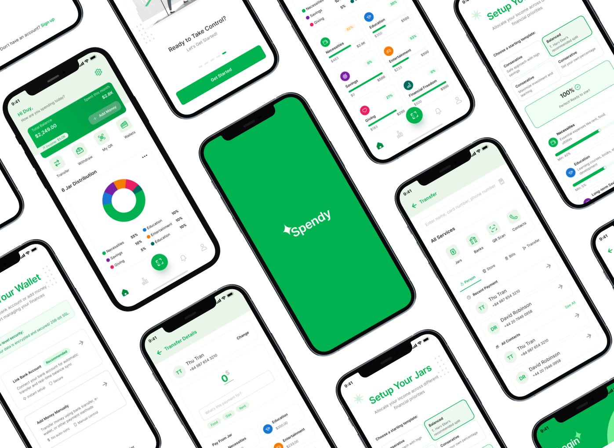

VPBank Technology Hackathon 2025 · Top 200 / 1000+
Spendy — AI Digital Wallet
Led a 5-person team to shape a fintech MVP concept combining AI financial coaching, money management flows, and overspending alerts. I owned the BA and UX/UI scope: feature description, product flow, MVP funnel, information architecture, wireframes, and near-final UI.
Problem
Translate a broad fintech challenge into a focused MVP that helps users understand and manage spending behaviour.
My Role
Team lead, BA, UX/UI design, IA, wireframing, flow definition, and pitch structure.
Output
Concept pitch, MVP funnel, product flow, wireframes, and near-final UI in Figma.